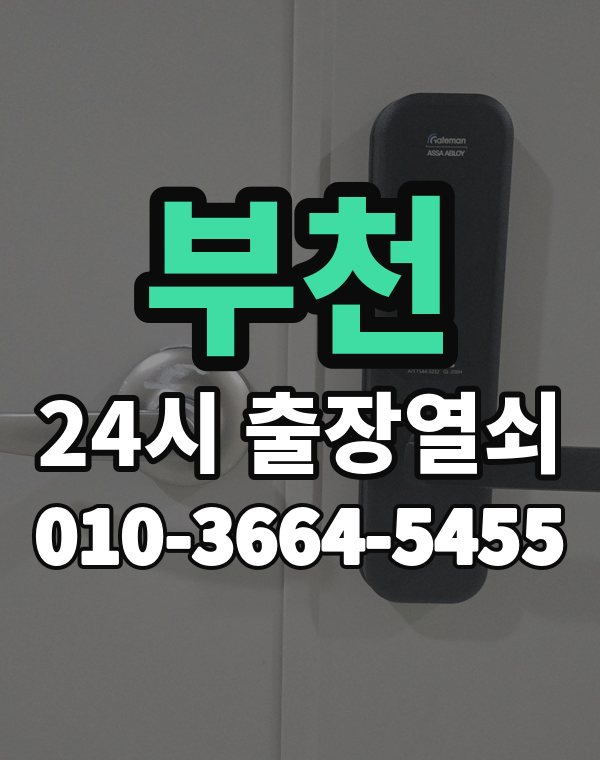

부천 출장 다니며 보는 동네
부천은 중동, 상동 신도시 아파트와 심곡동, 소사동 빌라, 상가가 촘촘한 도시입니다.
빌라가 많아 비슷한 건물 사이에서 위치를 정확히 알려주시는 게 중요합니다.

부천시 출장 가는 동네
- 중동
- 상동
- 심곡동
- 소사동
- 역곡동
- 송내동
- 원종동
- 오정동
- 고강동
- 옥길동
- 범박동
중동 출장열쇠, 상동 열쇠집처럼 동네 이름으로 찾으셨어도 같은 곳입니다.
적혀 있지 않은 동네도 부천시 안이면 다 갑니다.
부천에서 맡기실 수 있는 일
부천에서 전화 주실 때
건물 이름과 함께 가까운 역이나 큰 가게를 알려주시면 빨리 찾습니다.
오피스텔은 건물 출입 가능 여부를 먼저 알려주세요.
부천역, 신중동역, 부천시청역, 역곡역 근처라고 말씀해 주셔도 위치 잡기가 쉬워집니다.
가까운 역이나 큰 건물, 단지 이름을 같이 알려주세요.
- 정확한 주소, 아파트라면 동과 호수
- 번호판 상태 (꺼짐, 켜짐, 경고음)
- 거주 확인용 신분증이나 주소 나온 우편물
전화부터 작업까지 순서는 이용안내에 적어 두었습니다.
부천 출장열쇠 관련 글
- 부천 범박동 도어락 배터리가 방전되어 문이 안 열릴 때 대처법
- 부천 범박동 혼자 사시는 부모님 현관, 자녀가 챙겨 둘 도어락 설정과 비상 대책
- 부천 고강동 강추위에 도어락이 깜빡이다 꺼질 때, 빌라와 주택 현관 겨울 대비
- 부천 고강동 현관문이 안 열릴 때 먼저 확인할 것과 출장열쇠 부르는 순서
- 부천 중동 아파트 현관 잠금쇠가 덜 나오거나 안 들어갈 때 도어클로저와 바람까지 따져 보기
- 부천 중동 아파트 가족 도어락 비밀번호, 바꾸는 날 정하고 함께 쓰는 집안 규칙 만들기
- 부천 중동 스마트 도어락 고르는 법 지문·카드·번호 키 어떤 걸 달까
- 부천 오정동 한밤중 새벽에 문이 안 열릴 때 출장열쇠 전화하는 요령
- 부천 오정동 자취방과 고시원, 방 나눠 쓰는 집에서 출입문이 막혔을 때
- 부천 옥길동 이사 후 도어락 비밀번호 초기화와 새로 등록하는 순서
- 부천 옥길동 새 아파트 현관문, 비파손 개방으로 연다는 게 무슨 뜻일까
- 부천 상동 아파트 밀고 당기는 도어락 손잡이가 흔들리고 헛돌기 시작했다면
- 부천 상동 도어락 비밀번호 가족과 같이 관리하는 법 바꾸는 때와 순서
- 부천 심곡동 도어락 데드볼트가 끝까지 안 나오거나 안 들어갈 때 이렇게 풀어 보세요
- 부천 심곡동 빌라 현관문이 뻑뻑하고 안 열릴 때 문틀과 경첩부터 확인하세요
- 부천 송내동 열쇠가 실린더에서 안 돌아가거나 꽂힌 채 안 빠질 때
- 부천 송내동 상가 사무실 출입문 도어락이 안 열릴 때 영업 전에 확인할 것
- 부천 소사동 빌라 현관 결로와 장마 습기에 도어락이 오락가락할 때 정리
- 부천 소사동 열쇠를 잃어버렸거나 두고 나왔을 때 출장열쇠 부르는 순서
- 부천 원종동 현관문 보조키가 잠겨 안 열릴 때 걸쇠와 보조키 구별하는 법
- 부천 원종동 도어락 카드키나 태그, 공동현관 리모컨을 잃어버렸을 때 정리 순서
- 부천 역곡동 현관문이 끝까지 안 닫히거나 쾅 닫힐 때 도어클로저와 경첩 보는 법
- 부천 역곡동 자취방 원룸 현관문 잠겼을 때 대학가 출장열쇠 이용 방법
부천 출장열쇠 자주 묻는 질문
부천시 끝쪽 동네도 오시나요?
중동, 상동, 심곡동, 소사동, 역곡동, 송내동 등 부천시 전 지역 갑니다. 목록에 없는 동네도 전화로 위치만 알려주시면 됩니다.
부천 늦은 시간 출장도 되나요?
밤이든 새벽이든 받습니다. 어디인지 들으면 언제쯤 도착하는지 바로 말씀드립니다.
개방에 실패해도 비용이 나오나요?
못 열면 비용은 받지 않습니다. 비용은 작업 전에 먼저 말씀드리고, 괜찮다고 하시면 시작합니다.
본인 확인은 어떻게 하나요?
거주하시는 분인지 확인한 뒤 엽니다. 신분증이 집 안에 있으면 관리사무소 확인도 됩니다.
부천 도어락 수리나 교체도 하시나요?
네, 문 열기와 함께 도어락 수리, 설치, 교체도 합니다. 고쳐서 되면 교체는 권하지 않습니다.